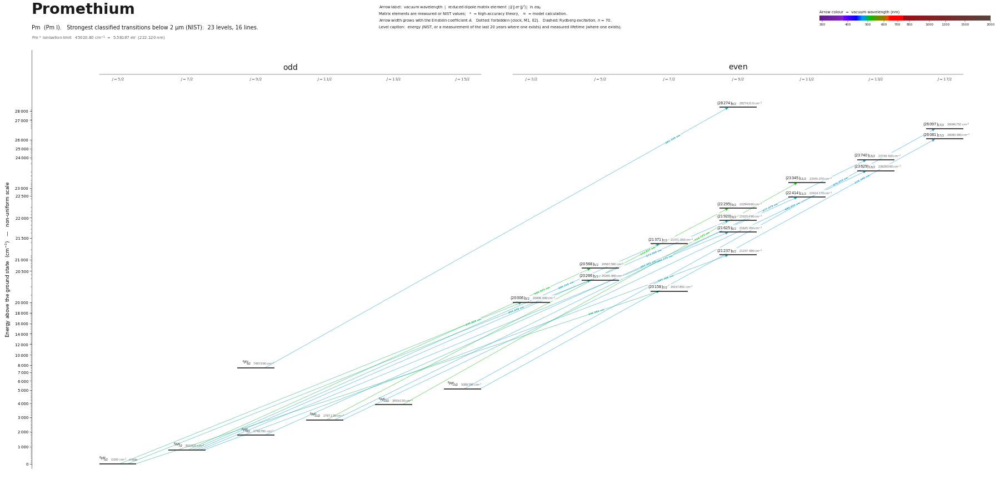

Promethium energy level diagram
Energy levels and transitions of neutral promethium (Pm I): the 16 strongest classified lines below 2 µm from the NIST Atomic Spectra Database and the 23 levels they connect, each line with its vacuum wavelength, frequency and, for 0 of them, the reduced dipole matrix element derived from the NIST transition rate. Lifetimes, hyperfine constants and isotope shifts from the literature have not been compiled for this element yet.
Hover a line or a level to isolate it, click to keep it selected. Scroll to zoom, drag to move.

Download: diagram (PDF) diagram (SVG) transitions (CSV) levels (CSV) source code

Listed Pm transitions below 2 µm
| Lower level | Upper level | λ vacuum (nm) | λ air (nm) | ν (THz) | Type | |⟨J‖er‖J′⟩| (ea₀) | A (s⁻¹) | Branching (%) | Source of matrix element / A |
|---|---|---|---|---|---|---|---|---|---|
| 6H°7/2 | (21920)9/2 | 473.5595 | 473.4271 | 633.0618 | E1 | – | – | – | – |
| 6H°15/2 | (26097)17/2 | 476.0327 | 475.8996 | 629.7728 | E1 | – | – | – | – |
| 6H°15/2 | (26081)17/2 | 476.3901 | 476.2569 | 629.3003 | E1 | – | – | – | – |
| 6H°11/2 | (23740)13/2 | 477.4792 | 477.3457 | 627.8649 | E1 | – | – | – | – |
| 6H°11/2 | (23629)13/2 | 480.0316 | 479.8975 | 624.5264 | E1 | – | – | – | – |
| 6H°7/2 | (21625)9/2 | 480.2698 | 480.1356 | 624.2168 | E1 | – | – | – | – |
| 6F°9/2 | (28274)9/2 | 481.3195 | 481.1850 | 622.8554 | E1 | – | – | – | – |
| 6H°9/2 | (22414)11/2 | 483.9009 | 483.7657 | 619.5328 | E1 | – | – | – | – |
| 6H°7/2 | (21371)7/2 | 486.2103 | 486.0746 | 616.5900 | E1 | – | – | – | – |
| 6H°7/2 | (21237)9/2 | 489.3883 | 489.2517 | 612.5860 | E1 | – | – | – | – |
| 6H°5/2 | (20266)5/2 | 493.4378 | 493.3001 | 607.5588 | E1 | – | – | – | – |
| 6H°5/2 | (20158)7/2 | 496.0847 | 495.9462 | 604.3171 | E1 | – | – | – | – |
| 6H°5/2 | (20006)3/2 | 499.8490 | 499.7096 | 599.7660 | E1 | – | – | – | – |
| 6H°7/2 | (20568)5/2 | 505.9720 | 505.8310 | 592.5080 | E1 | – | – | – | – |
| 6H°11/2 | (22295)9/2 | 512.8768 | 512.7339 | 584.5311 | E1 | – | – | – | – |
| 6H°13/2 | (23345)11/2 | 514.7730 | 514.6296 | 582.3780 | E1 | – | – | – | – |
Reduced dipole matrix elements follow the convention A = ω³|d|²/(3πε₀ħc³(2J′+1)), with J′ the upper level. Tags show where a number comes from: measured, NIST compilation, high-accuracy theory, or a model calculation.
Pm energy levels
| Level | Energy (cm⁻¹) | J | Parity | Lifetime | gJ | Hyperfine A (MHz) | Hyperfine B (MHz) | Lifetime source | Hyperfine source |
|---|---|---|---|---|---|---|---|---|---|
| 6H°5/2 | 0.000 | 5/2 | odd | stable | 0.305 | – | – | – | – |
| 6H°7/2 | 803.820 | 7/2 | odd | – | 0.8279 | – | – | – | – |
| 6H°9/2 | 1748.780 | 9/2 | odd | – | 1.068 | – | – | – | – |
| 6H°11/2 | 2797.100 | 11/2 | odd | – | 1.205 | – | – | – | – |
| 6H°13/2 | 3919.030 | 13/2 | odd | – | 1.307 | – | – | – | – |
| 6H°15/2 | 5089.790 | 15/2 | odd | – | 1.33 | – | – | – | – |
| 6F°9/2 | 7497.990 | 9/2 | odd | – | 1.44 | – | – | – | – |
| (20006)3/2 | 20006.040 | 3/2 | even | – | 0.068 | – | – | – | – |
| (20158)7/2 | 20157.850 | 7/2 | even | – | 0.503 | – | – | – | – |
| (20266)5/2 | 20265.980 | 5/2 | even | – | 0.527 | – | – | – | – |
| (20568)5/2 | 20567.760 | 5/2 | even | – | 0.91 | – | – | – | – |
| (21237)9/2 | 21237.490 | 9/2 | even | – | 0.841 | – | – | – | – |
| (21371)7/2 | 21371.050 | 7/2 | even | – | 0.927 | – | – | – | – |
| (21625)9/2 | 21625.450 | 9/2 | even | – | 1.117 | – | – | – | – |
| (21920)9/2 | 21920.490 | 9/2 | even | – | 0.986 | – | – | – | – |
| (22295)9/2 | 22294.960 | 9/2 | even | – | 1.245 | – | – | – | – |
| (22414)11/2 | 22414.170 | 11/2 | even | – | 1.12 | – | – | – | – |
| (23345)11/2 | 23345.070 | 11/2 | even | – | 1.323 | – | – | – | – |
| (23629)13/2 | 23629.060 | 13/2 | even | – | 1.09 | – | – | – | – |
| (23740)13/2 | 23740.420 | 13/2 | even | – | – | – | – | – | – |
| (26081)17/2 | 26080.990 | 17/2 | even | – | 1.29 | – | – | – | – |
| (26097)17/2 | 26096.750 | 17/2 | even | – | 1.25 | – | – | – | – |
| (28274)9/2 | 28274.210 | 9/2 | even | – | 1.055 | – | – | – | – |
Pm⁺ ionisation limit 45020.80 cm⁻¹ = 5.58187 eV (222.120 nm)
Sources
Atoms with measured data
- Lithium-632 levels, 85 lines
- Lithium-732 levels, 85 lines
- Beryllium-917 levels, 26 lines
- Sodium-2336 levels, 106 lines
- Magnesium-2418 levels, 61 lines
- Magnesium-2518 levels, 61 lines
- Potassium-3934 levels, 84 lines
- Potassium-4034 levels, 84 lines
- Potassium-4134 levels, 84 lines
- Calcium-4035 levels, 61 lines
- Calcium-4335 levels, 61 lines
- Rubidium-8536 levels, 94 lines
- Rubidium-8736 levels, 94 lines
- Strontium-8740 levels, 70 lines
- Strontium-8840 levels, 70 lines
- Caesium-13331 levels, 79 lines
- Barium-13744 levels, 89 lines
- Barium-13844 levels, 89 lines
- Dysprosium-16339 levels, 55 lines
- Dysprosium-16439 levels, 55 lines
- Ytterbium-17118 levels, 26 lines
- Ytterbium-17418 levels, 26 lines